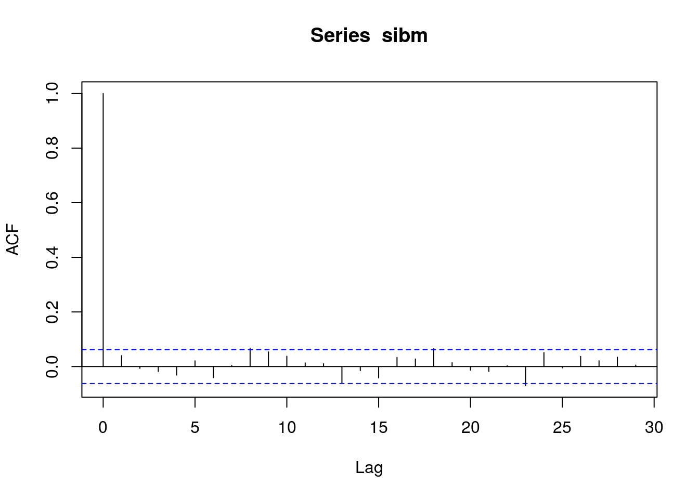
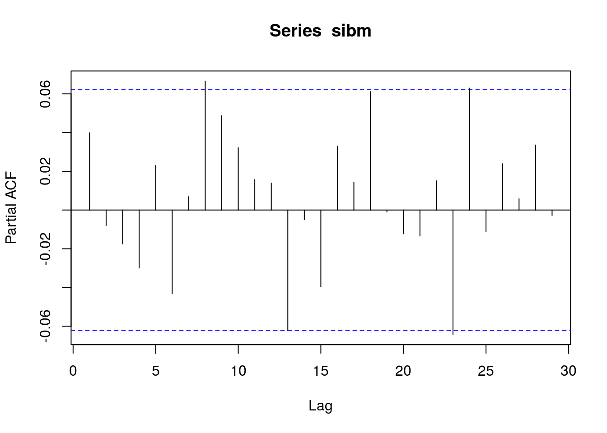
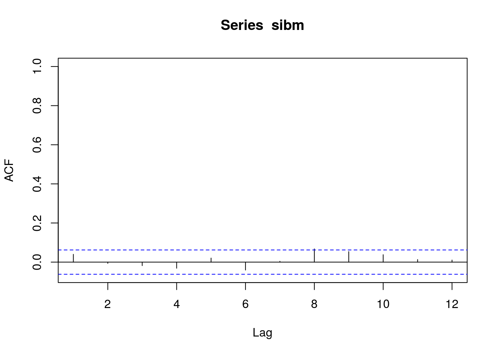
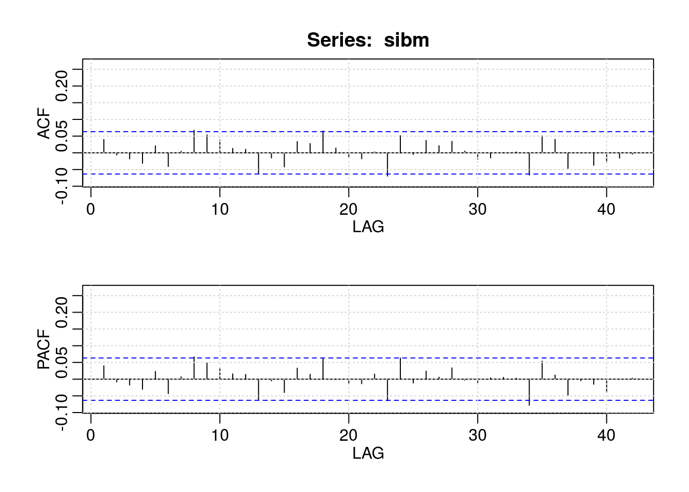
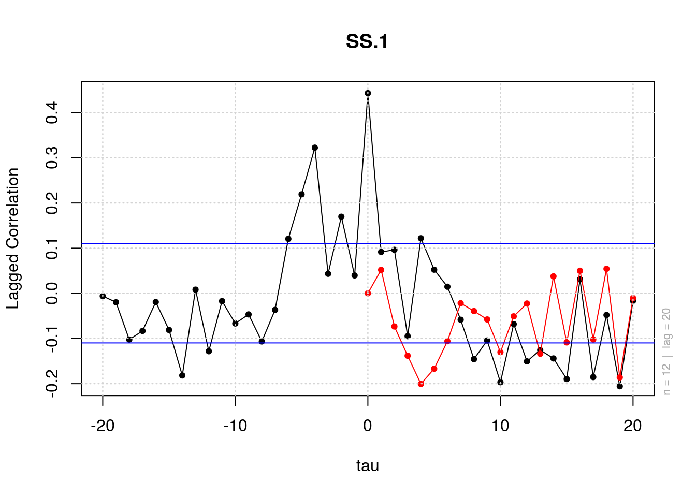
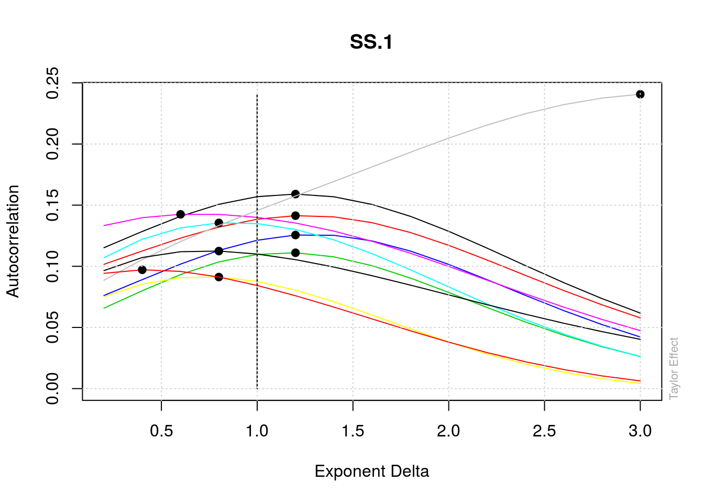
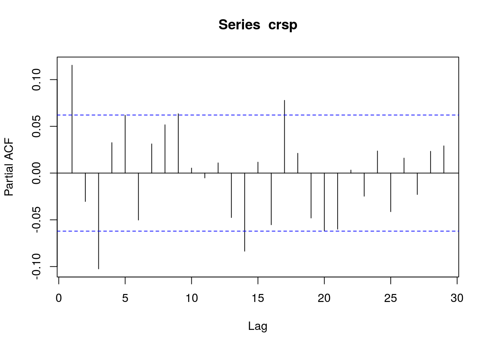
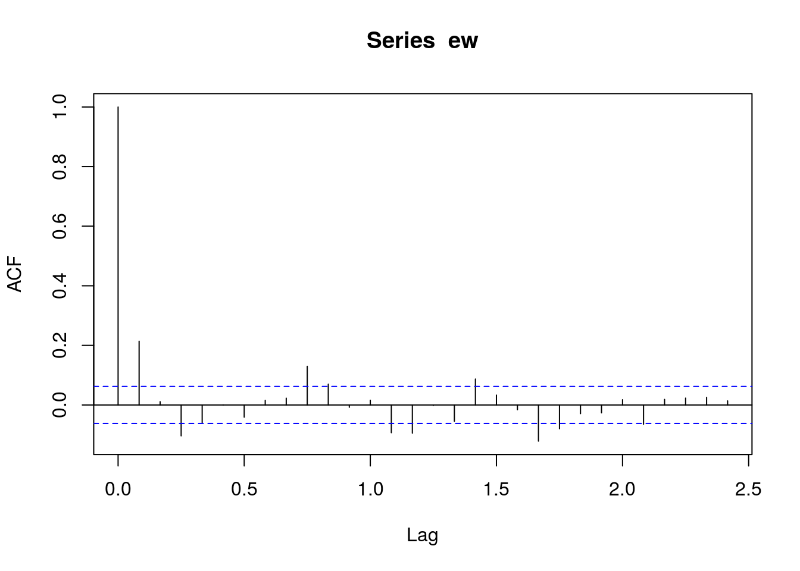
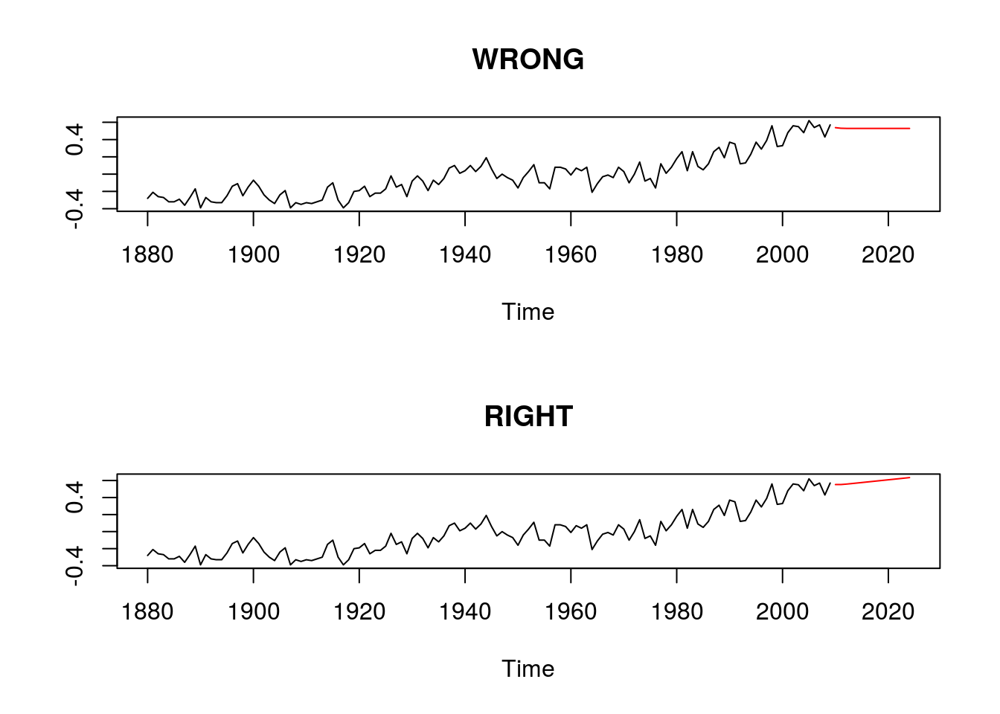
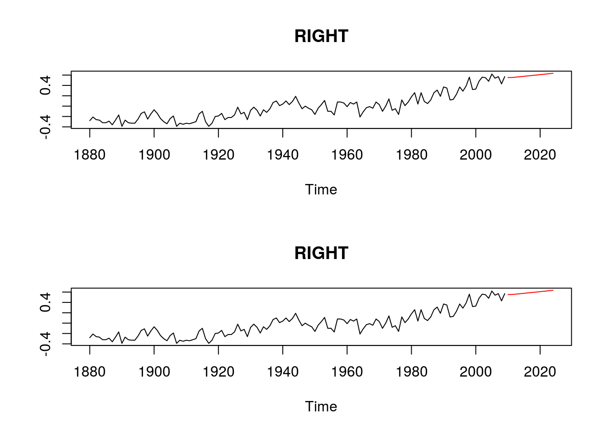

Chapter 2: Linear Time Series Analysis and Its Applications
kongs
Sunday, July 06, 2014
Warning: Hyperlinks of the table of contents may be broken. This hopefully will be fixed by Shinyapps.io later.
Todo: Write a self-sufficient example for ARIMA estimation and diagnostic, using suggested packages.
Todo: Compare different software working process, include Mablab, Stata, Python, SAS.
Todo: Compare different software working process, include Mablab, Stata, Python, SAS.
1 Stationary
2 Correlation and Autocorrelation Function
2.1 Autocorrelation Function (ACF)
\[ \rho_\ell = \frac{\text{Cov}(r_t, r_{t-\ell})}{\sqrt{\text{Var}(r_t)\text{Var}(r_{t-\ell})}} = \frac{\text{Cov}(r_t, r_{t-\ell})}{\text{Var}(r_t)} = \frac{\gamma_\ell}{\gamma_0} \]
2.2 Test Individual ACF
2.3 Portmanteau Test
Test jointly that several autocorrelations of \(r_t\) are zero.
- \(H_0\): \(\rho_1 = \rho_2 = ... = \rho_m = 0\)
\[ Q(m) = T(T+2)\sum_{\ell=1}^{m} \frac{\hat{\rho}_{\ell}^2}{T - \ell} \]
# library(fBasics)
# library(forecast)
source('util/dataset.R')df = read.table(dataset$m_ibm3dx2608$url, header=T)
sibm = df$ibmrtn
Box.test(sibm, lag=12, type='Ljung')##
## Box-Ljung test
##
## data: sibm
## X-squared = 14.27, df = 12, p-value = 0.2837sibm_acf = acf(sibm)
sibm_acf##
## Autocorrelations of series 'sibm', by lag
##
## 0 1 2 3 4 5 6 7 8 9
## 1.000 0.040 -0.006 -0.018 -0.031 0.021 -0.041 0.004 0.067 0.054
## 10 11 12 13 14 15 16 17 18 19
## 0.038 0.013 0.010 -0.062 -0.015 -0.042 0.034 0.028 0.065 0.014
## 20 21 22 23 24 25 26 27 28 29
## -0.013 -0.018 0.003 -0.069 0.051 -0.005 0.037 0.021 0.034 0.005sibm_pacf = pacf(sibm)
sibm_pacf##
## Partial autocorrelations of series 'sibm', by lag
##
## 1 2 3 4 5 6 7 8 9 10
## 0.040 -0.008 -0.017 -0.030 0.023 -0.043 0.007 0.067 0.049 0.032
## 11 12 13 14 15 16 17 18 19 20
## 0.016 0.014 -0.062 -0.005 -0.040 0.033 0.014 0.061 -0.001 -0.012
## 21 22 23 24 25 26 27 28 29
## -0.013 0.015 -0.064 0.063 -0.011 0.024 0.006 0.034 -0.003# If you want acf start with lag 1, as acf(lag=0) is always 1, you can give xlim starting from 1. Likely you can also set ylim to make it looks better.
acf(sibm, lag=12, xlim=c(1, 12))
acf2{astsa} is a handy function to plot both acf and pacf from \(lag=1\), sharing the same y axis range.
acf_pacf = astsa::acf2(sibm)
head(acf_pacf)## ACF PACF
## [1,] 0.04 0.04
## [2,] -0.01 -0.01
## [3,] -0.02 -0.02
## [4,] -0.03 -0.03
## [5,] 0.02 0.02
## [6,] -0.04 -0.04Package {fBasics} also include another two functions that deal with correlations: lacfPlot, and teffectPlot.
fBasics::lacfPlot(sibm)
fBasics::teffectPlot(sibm)
3 White noise and linear time series
3.1 Linear Time Series
\[ r_t = \mu + \sum_{i=0}^{\infty} \psi_i a_{t-i} \]
We have,
\[ E(r_t) = \mu, \text{Var}(r_t) = \sigma_a^2 \sum_{i=0}^\infty \psi_i^2 \]
The lag-\(\ell\) autocovariance of \(r_t\) is
\[ \gamma_\ell = \sigma_a^2 \sum_{j=0}^\infty \psi_j \psi_{j+\ell} \]
\[ \rho_\ell = \frac{\gamma_\ell}{\gamma_0} = \frac{\sum_{i=0}^\infty \psi_i \psi_{i+\ell}}{1+\sum_{i=1}^\infty \psi_i^2} \]
4 Simple AR Models
4.0.1 An AR(1) Model
\[ r_t = \phi_0 + \phi_1 r_{t-1} + a_t\] Where \(\{a_t\}\) is assumed to be a white noise series with mean zero and variance \(\sigma_a^2\).
\[ E(r_t|r_{t-1}) = \phi_0 + \phi_1 r_{t-1}, \text{Var}(r_t|r_{t-1}) = \text{Var}(a_t) = \sigma_a^2\]
4.0.2 AR(p) Model
\[ r_t = \phi_0 + \phi_1 r_{t-1} + \ldots + \phi_p r_{t-p} + a_t \]
4.1 Properties of AR Models
4.1.1 AR(1) Model
\[ E(r_t) = \mu = \frac{\phi_0}{1-\phi_1} \]
\[ r_t - \mu = \phi_1(r_{t-1}-\mu) + a_t \]
\[ \text{Var}(r_t) = \frac{\sigma_a^2}{1-\phi_1^2} \]
\[ \rho_\ell = \phi_1 \rho_{\ell - 1} \]
4.1.2 AR(2) Model
\[ (r_t - \mu) = \phi_1(r_{t-1} - \mu) + \phi_2(r_{t-2} - \mu) + a_t \]
\[ \rho_1 = \frac{\phi_1}{1-\phi_2} \] \[ \rho_\ell = \phi_1 \rho_{\ell-1} + \phi_2 \rho_{\ell-2} \]
\[ (1-\phi_1 B - \phi_2 B^2)\phi_\ell = 0 \]
The solutions to the corresponding second-order polynomial equation are:
\[ x= \frac{\phi_1 \pm \sqrt{\phi_1^2 + 4 \phi_2}}{-2\phi_2} \]
\[ k = \frac{2\pi}{\cos^{-1}(\phi_1 / 2\sqrt{-\phi_2})}\]
If we write the solutions as \(a \pm b i\), then we have \(\phi_1 = 2a, \phi_2 = -(a^2 + b^2)\), and
\[ k = \frac{2\pi}{\cos^{-1}(a / \sqrt{a^2 + b^2})} \]
4.1.2.1 Example
gnp = scan(file=dataset$dgnp82$url)
gnp_ts = ts(gnp, frequency=4, start=c(1947,2))
plot(gnp_ts)
points(gnp_ts, pch='*')
gnp_ar = ar(gnp, method='mle')
# Calculate $\phi_0$:
(1-sum(gnp_ar$ar)) * gnp_ar$x.mean## [1] 0.00476# Residual standard error:
sqrt(gnp_ar$var.pred)## [1] 0.009709# calculate business cycle k
p1 = c(1, -gnp_ar$ar)
roots = polyroot(p1)
roots## [1] 1.59+1.064i -1.92-0.000i 1.59-1.064iMod(roots)## [1] 1.913 1.920 1.913k = 2 * pi / acos(1.59023/1.913308)
k## [1] 10.66# If using a general arima model with order (ar, 0, 0)
gnp_arima = arima(gnp, order=c(gnp_ar$order, 0, 0))
gnp_arima##
## Call:
## arima(x = gnp, order = c(gnp_ar$order, 0, 0))
##
## Coefficients:
## ar1 ar2 ar3 intercept
## 0.348 0.179 -0.142 0.008
## s.e. 0.074 0.078 0.075 0.001
##
## sigma^2 estimated as 9.43e-05: log likelihood = 565.8, aic = -1122coefs = gnp_arima$coef
# \phi_0:
(1-sum(coefs[1:gnp_ar$order])) * coefs[['intercept']]## [1] 0.004723# Residual standard error:
sqrt(gnp_arima$sigma2)## [1] 0.009709# Same logic applies when calculate cycles4.1.3 Stationary
4.2 Identifying AR Models in Practice
4.2.1 Partial Autocorrelation Function (PACF)
df = read.table(dataset$m_ibm3dx2608$url, header=T)
crsp = df$vwrtn
crsp_pacf = pacf(crsp)
crsp_pacf##
## Partial autocorrelations of series 'crsp', by lag
##
## 1 2 3 4 5 6 7 8 9 10
## 0.115 -0.030 -0.102 0.033 0.062 -0.050 0.031 0.052 0.063 0.005
## 11 12 13 14 15 16 17 18 19 20
## -0.005 0.011 -0.048 -0.084 0.012 -0.055 0.078 0.021 -0.048 -0.062
## 21 22 23 24 25 26 27 28 29
## -0.060 0.003 -0.025 0.024 -0.041 0.016 -0.023 0.023 0.029mdl = arima(crsp, order=c(3,0,0))
mdl##
## Call:
## arima(x = crsp, order = c(3, 0, 0))
##
## Coefficients:
## ar1 ar2 ar3 intercept
## 0.116 -0.019 -0.104 0.009
## s.e. 0.031 0.032 0.032 0.002
##
## sigma^2 estimated as 0.00287: log likelihood = 1501, aic = -2992(1-sum(mdl$coef)+mdl$coef['intercept'])*mdl$coef['intercept'] # phi0## intercept
## 0.009012rtest = Box.test(mdl$residuals, lag=12, type='Ljung')
rtest##
## Box-Ljung test
##
## data: mdl$residuals
## X-squared = 16.35, df = 12, p-value = 0.1756# Adjust degrees of freedom:
1-pchisq(rtest$statistic, 12-3)## X-squared
## 0.05988# To fix AR(2) coef to zero:
arima(crsp, order=c(3,0,0), fixed=c(NA,0,NA,NA))## Warning: some AR parameters were fixed: setting transform.pars = FALSE##
## Call:
## arima(x = crsp, order = c(3, 0, 0), fixed = c(NA, 0, NA, NA))
##
## Coefficients:
## ar1 ar2 ar3 intercept
## 0.114 0 -0.106 0.009
## s.e. 0.031 0 0.032 0.002
##
## sigma^2 estimated as 0.00288: log likelihood = 1501, aic = -2993Question: How to get p-values of coeffcients?
Answer: A general form is pt(abs(model$coef)/sqrt(diag(aa$var.coef)), df.of.resid, lower.tail = F)*2, but you need to find out how to access to coef and stardard of coefs of your model object.
4.2.2 Information Criteria
You can use ar(...)$aic and ar(...)$order to get IC based order selection data.
4.3 Goodness of Fit
4.4 Forecasting
See the following code example.
dt = read.table(dataset$m_ibm3dx2608$url, header=T)
vwval = dt$vwrtn
vw = ts(vwval, frequency=12, start=c(1926,1))
x = ts(vw[1:984], start=start(vw), frequency=12)
actual = ts(vw[-c(1:984)], end=end(vw), frequency=12)
fit = forecast::Arima(x, order=c(3,0,0))
fore1 = forecast::forecast(fit, 12)
plot(x, xlim=c(2000, 2010))
points(fore1$mean, pch=1, cex=0.8, type="o")
points(actual, pch=20, cex=0.8, type="o")
lines(ts(fore1$upper[,'95%'], end=end(vw), frequency=12), lty=3)
lines(ts(fore1$lower[,'95%'], end=end(vw), frequency=12), lty=3)To produce exactly the same figure as Figure 2.7 on page57:
x = ts(vw[1:984], start=start(vw), frequency=12)
actual = ts(vw[-c(1:984)], end=end(vw), frequency=12)
fit = forecast::Arima(x, order=c(3,0,0))
fore1 = forecast::forecast(fit, 12)
plot(vw, xlim=c(2000, 2010), type="o", pch=20, cex=0.5)
points(fore1$mean, pch=1, cex=0.8, type="o")
points(actual, pch=20, cex=0.8, type="o")
lines(ts(c(x, fore1$mean), frequency=12, start=start(x)))
x_upper = ts(c(x, fore1$upper[,'95%']), start=start(x), frequency=12)
x_lower = ts(c(x, fore1$lower[,'95%']), start=start(x), frequency=12)
lines(x_upper, lty=3)
lines(x_lower, lty=3)5 MA Models
\[ r_t = c_0 + a_t - \theta_1 a_{t-1} - /ldots - \theta_q a_{t-2} \]
5.1 Properties of MA models
5.1.1 Stationarity
\[ E(r_t) = c_0 \] \[ \text{Var}(r_t) = (1+\theta_1^2 + \theta_2^2 + \ldots + \theta_q^2)\sigma_a^2 \]
5.1.2 Autocorrelation Function
For an MA(q) model, \(\rho_\ell = 0, for \ell > q \).
5.1.3 Invertibility
Rewriting a zero-mean MA(1) mdel as $ a_t = r_t + 1 a{t-1} \(, \)$ a_t = r_t + 1 r{t-1} + 1^2 r{t-2} + $$
if $ |_1| < 1$, we say the MA(1) model is invertible.
5.2 Identifying MA Order
dt = read.table(dataset$m_ibm3dx2608$url, header=T)
ew = dt$ewrtn
ew = ts(ew, frequency=12, start=c(1926,1))
plot(ew, type='l')
ew_acf = acf(ew)
ew_acf##
## Autocorrelations of series 'ew', by lag
##
## 0.0000 0.0833 0.1667 0.2500 0.3333 0.4167 0.5000 0.5833 0.6667 0.7500
## 1.000 0.214 0.011 -0.104 -0.059 0.000 -0.041 0.016 0.023 0.130
## 0.8333 0.9167 1.0000 1.0833 1.1667 1.2500 1.3333 1.4167 1.5000 1.5833
## 0.070 -0.008 0.016 -0.093 -0.095 -0.001 -0.055 0.087 0.033 -0.016
## 1.6667 1.7500 1.8333 1.9167 2.0000 2.0833 2.1667 2.2500 2.3333 2.4167
## -0.121 -0.080 -0.029 -0.026 0.018 -0.065 0.019 0.023 0.026 0.0145.3 Estimating an MA model
m1 = arima(ew, order=c(0,0,9), fixed=c(NA,0,NA,rep(0,5),NA, NA))
m1## Series: ew
## ARIMA(0,0,9) with non-zero mean
##
## Coefficients:
## ma1 ma2 ma3 ma4 ma5 ma6 ma7 ma8 ma9 intercept
## 0.191 0 -0.120 0 0 0 0 0 0.123 0.012
## s.e. 0.029 0 0.034 0 0 0 0 0 0.031 0.003
##
## sigma^2 estimated as 0.0051: log likelihood=1216
## AIC=-2421 AICc=-2421 BIC=-23676 Simple ARMA Models
An ARMA(1,1) Model \[ r_t - \phi_1 r_{t-1} = \phi_0 + a_t - \theta_1 a_{t-1} \]
6.1 Properties of ARMA(1,1) Models
\[ E(r_t) = \mu = \frac{\phi_1}{1-\phi_1} \]
\[ \text{Var}(r_t) = \frac{(1-2\phi_1 \theta_1 + \theta_1^2)\sigma_a^2}{1-\phi_1^2} \]
7 Unitroot, Seasonal Models etc., to be finished
TO BE FINISHED…
timeDate::setRmetricsOptions(myFinCenter = "GMT")
charvec = timeDate::timeCalendar()
set.seed(4711)
data = matrix(exp(cumsum(rnorm(12, sd = 0.1))))
tS = timeSeries::timeSeries(data, charvec, units = "tS")
tS## GMT
## tS
## 2014-01-01 1.1996
## 2014-02-01 1.3758
## 2014-03-01 1.5506
## 2014-04-01 1.4888
## 2014-05-01 1.4005
## 2014-06-01 1.2044
## 2014-07-01 1.3070
## 2014-08-01 1.1868
## 2014-09-01 1.1815
## 2014-10-01 1.2389
## 2014-11-01 1.1230
## 2014-12-01 0.9597da = read.table(dataset$d_sp55008$url, header=T)
sp5 = log(da[,7])
fUnitRoots::adfTest(sp5, lags=15, type=c('ct'))##
## Title:
## Augmented Dickey-Fuller Test
##
## Test Results:
## PARAMETER:
## Lag Order: 15
## STATISTIC:
## Dickey-Fuller: -1.9946
## P VALUE:
## 0.5807
##
## Description:
## Thu Jul 10 12:52:00 2014 by user:Forecasting an ARIMA Model
data(gtemp, package="astsa")
fit1 = arima(gtemp, order=c(1,1,1))
fore1 = predict(fit1, 15)
nobs = length(gtemp)
fit2 = arima(gtemp, order=c(1,1,1), xreg=1:nobs)
fore2 = predict(fit2, 15, newxreg=(nobs+1):(nobs+15))
ok=par()
par(mfrow=c(2,1))
ts.plot(gtemp,fore1$pred, col=1:2, main="WRONG")
ts.plot(gtemp,fore2$pred, col=1:2, main="RIGHT")
fit3 = forecast::Arima(gtemp, order=c(1,1,1),include.drift=T)
fore3 = forecast::forecast(fit3, 15)
ts.plot(gtemp,fore2$pred, col=1:2, main="RIGHT")
ts.plot(gtemp,fore3$mean, col=1:2, main="RIGHT")